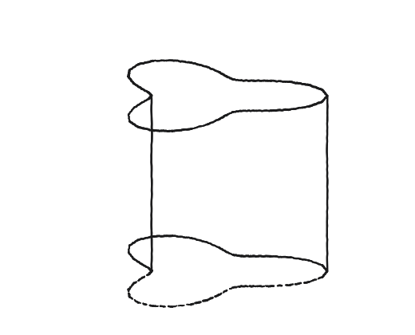
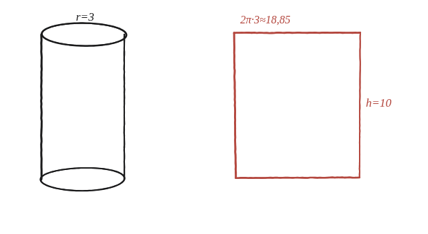
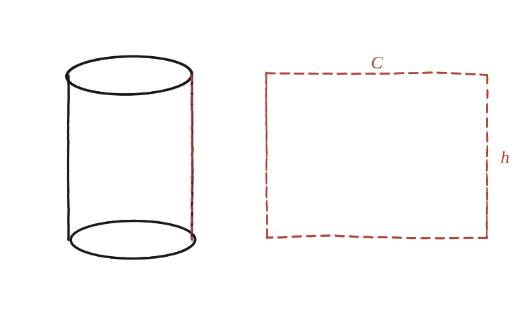

Com podem mesurar l'àrea de la superfície d'un cilindre (generalitzat)?

Un avís abans de començar
En un dibuix en perspectiva, les circumferències de dalt i de baix d'un cilindre no semblen cercles —surten aixafades, com el·lipses. Cal fiar-se de l'objecte, no del dibuix: són cercles de veritat (o, com mostra la pròpia figura de l'enunciat, qualsevol altra corba tancada: d'aquí ve el "generalitzat" del títol).
Pensa en l'etiqueta d'una llauna
Si es talla l'etiqueta de paper d'una llauna de sopa en vertical i s'estira plana, quina forma en surt? Amb radi 3 i alçada 10: l'amplada de l'etiqueta és la longitud de la circumferència, 2π×3 ≈ 18,85; l'alçada és 10, la mateixa del cilindre. Ja hi ha un rectangle.

La construcció

Tancar-ho
L'àrea lateral del cilindre és, exactament, l'àrea d'aquest rectangle: (2πr) × h. No cal cap fórmula nova ni cap límit —un cop desenrotllat, és literalment base per alçada. El parany habitual: l'amplada del rectangle és la circumferència, no el diàmetre ni el radi.
L'àrea lateral d'un cilindre és perímetre de la base per alçada: en desenrotllar-lo surt sempre un rectangle d'amplada igual a la circumferència (2πr en el cas circular) i alçada h.
Comprovació
Amb r=3, h=10: àrea lateral = 2π(3)(10) = 60π ≈ 188,5. Si s'hi afegeixen les dues tapes circulars (2×πr² = 18π), la superfície total surt 78π ≈ 245,0.
Una nota sobre el "generalitzat" del títol: aquest argument treballa sempre, aquí, amb un cilindre de base circular, però el mètode de l'etiqueta desenrotllada val exactament igual per a qualsevol sòlid fet lliscant una corba plana tancada qualsevol —no cal que sigui un cercle— perpendicularment, sense girar-la ni canviar-ne la mida (com la base irregular que mostra la mateixa figura de l'enunciat). Si la base té perímetre P, l'àrea lateral és P × h sempre; 2πr és només el valor d'aquest perímetre en el cas particular que la base sigui un cercle.